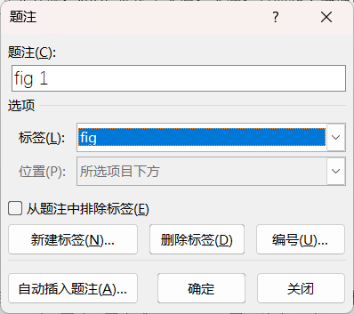
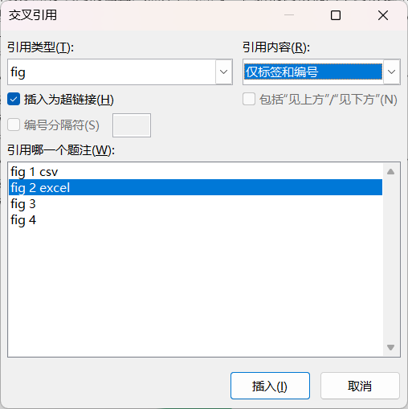

引用
References
Part1 参考文献
- 创建：基本过程：定位 → 选择 → 插入
- 准备若干正文内容
- 准备若干参考文献，并设置自动编号格式如[1]、[2]...
- 将光标定位在正文某处，不需要选择文本对象，单击"插入交叉引用"，如下图所示
- 选择第一个编号项，单击"插入"，光标处出现对应编号项
- 移动光标到正文其它位置，选择相应的编号项，单击"插入"
- 重复至完成
- 关闭对话框
- 利用查找替换调整引用的样式为上标；如果参考文献超过10，要额外多进行一次替换
- 按 Ctrl + H 打开"查找替换"
- 光标定位到查找内容：选择"特殊格式" → "任意数字"，然后符号 ^# 前面分别加上[]
- 光标定位到替换内容：设置字体格式为上标；完成其它更多样式设置
- 单击"全部替换"

也可以使用通配符实现：\[[0-9]{1,}\]


Part2 图片交叉引用
准备文档，其中插入了若干张图片
选择某张图片，在下方插入题注，默认标签是"图表"，自定义标签为"fig"，如下图

定位光标在文档某处需要引用的地方，插入"交叉引用"，指定类型和内容如下

调整引用编号的格式
Part3 表格交叉引用
- 操作同上
- 先为表格添加题注，再插入交叉引用